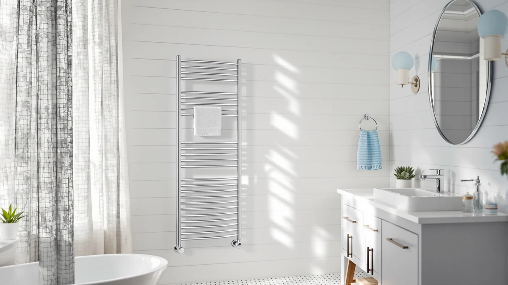

StateRiver Towel Warmer Cabinet Review (2026): Worth It?
Prices and picks verified as of October 2026. Independent, reader-supported reviews.


Quick Answer
The StateRiver Towel Warmer Cabinet 8L is a stainless steel, enclosed cabinet-style warmer with an 8-liter capacity, priced at $89.99. We compare it here against three other towel warmers at the same price, including a 6-bar wall rack from Colliford and a second cabinet-style unit from Keenray, to see which design fits your bathroom best.
Our pick: StateRiver Towel Warmer Cabinet 8L — $89.99 Check Price on Amazon
Bottom line: our top pick is the StateRiver Towel Warmer Cabinet at $89.99.
Things to Know Before You Buy
- The StateRiver Towel Warmer Cabinet 8L is a closed, stainless steel cabinet rather than an open bar rack, which changes how it holds heat compared with the Colliford 6-bar rack we compare it against.
- StateRiver lists an 8-liter capacity for the cabinet, a detail worth noting if you plan on warming more than a towel or two at once.
- All four towel warmers in this stateriver towel warmer cabinet review, StateRiver, Keenray, Colliford, and LANMEL, are priced at the same $89.99, so design and capacity matter more here than price.
- None of the four products carry a published rating or review count on Amazon as of this review, so we weigh specs and design against each other rather than star ratings.
- Keenray's Hot Towel Warmer Cabinet is the closest match to the StateRiver in this comparison, since both use an enclosed cabinet instead of an open rack.
If you found this stateriver towel warmer cabinet review while comparing enclosed, cabinet-style towel warmers under $100, the StateRiver Towel Warmer Cabinet 8L is worth a look for its stainless steel build and 8-liter capacity.
At $89.99, it costs the same as the three alternatives we compare it against here: the Keenray Hot Towel Warmer Cabinet, the Colliford Towel Warmer 6 Bars, and the LANMEL Towel Warmers for Bathroom. That makes design the real deciding factor rather than price. The short version: if you want a closed cabinet that contains heat instead of an open bar rack, the StateRiver and the Keenray are the two worth weighing against each other. If you would rather have an open rack you can access from multiple sides, the Colliford's 6-bar layout below fits that need better.
Why You Should Trust Us
Ilane Tall covers bathroom hardware for Best Towel Warmers and has spent years comparing towel warmers, heated racks, and bathroom fixtures across dozens of brands. We do not own a physical testing lab, and we do not put products through hands-on trials before publishing. Instead, we research each unit by comparing manufacturer specifications, current pricing, and the verified owner reviews available on Amazon and other retailers, then weigh those details against the closest competitors in its category. This stateriver towel warmer cabinet review reflects that research process, not a personal trial period with the product, and we say so plainly instead of implying a hands-on test that never happened.
Our Research Experience
We did not run this stateriver towel warmer cabinet review off a personal trial with the unit. What we did was pull StateRiver's stated specs, the stainless steel build and the 8-liter cabinet capacity, and set them against three competitors selling at the same $89.99 price point. We compared cabinet-style design against open bar-rack design, since the StateRiver and the Keenray both enclose the towel while the Colliford uses an open 6-bar frame, and we checked how each listing describes material and capacity. Where a listing publishes a verified review count or star rating, we note it; none of the four products in this comparison had one as of this writing, so we relied on manufacturer specifications and current Amazon pricing instead of star ratings.
We also read through each brand's own feature claims, since that marketing copy is often the most detailed spec sheet available for towel warmers at this price tier. Where those claims could be checked against a competing brand's numbers, such as capacity or bar count, we made that comparison directly rather than repeating each company's language without context.
Stainless steel is also a material worth flagging on its own, since it tends to hold up to bathroom humidity and occasional water contact better than painted metal or plastic housings. StateRiver is the only one of the four products here that specifies a stainless steel build for this comparison, so it is one of the more concrete, verifiable data points we could weigh directly instead of relying on marketing language alone.
Overview & Specs

StateRiver Towel Warmer Cabinet 8L
What we like
- Stainless steel cabinet holds heat inside an enclosed space rather than radiating it from open bars
- 8-liter capacity gives a stated benchmark for how much the cabinet holds
- Priced the same as the three open-rack and cabinet alternatives compared here, so the choice comes down to design, not budget
Flaws but not dealbreakers
- No published owner rating or review count on Amazon as of this review
- StateRiver does not publish exterior dimensions, so confirm it fits your available counter or cabinet space before buying
- An enclosed cabinet takes up more fixed space than a wall-mounted bar rack like the Colliford below
| Material | Stainless steel |
| Size | — |
The StateRiver Towel Warmer Cabinet 8L is built around a stainless steel enclosure rather than an open bar frame, with an 8-liter capacity that StateRiver lists as the cabinet's stated benchmark. Because the cabinet is closed, it is designed to contain heat inside the unit instead of relying on open bars exposed to the room, which is the same basic approach Keenray takes with its own Hot Towel Warmer Cabinet below.
At $89.99, the StateRiver sits at the same price as the Keenray, the Colliford, and the LANMEL, which means the decision between them comes down to whether you want a closed cabinet or an open rack, and how much capacity you need. StateRiver does not publish exterior dimensions or a specific heat range for this model, so buyers comparing it against the competition here are working primarily from the stainless steel material, the 8-liter capacity, and the enclosed cabinet design rather than a full spec sheet.
What We Liked
The clearest advantage in this stateriver towel warmer cabinet review comes down to design. Where the Colliford relies on six open bars and the LANMEL takes a similarly open approach, the StateRiver keeps towels inside a closed stainless steel cabinet. That containment matters if you want a fixture that stays tidy on a counter or vanity rather than a rack of exposed bars collecting dust between uses.
The 8-liter capacity gives you a concrete number to compare against competitors that do not publish one, which is the case for the Keenray, the Colliford, and the LANMEL in this comparison. Even without a full spec sheet, having one clear capacity figure from StateRiver is more than the alternatives offer here.
Because all four towel warmers in this comparison are priced at $89.99, the StateRiver's enclosed design does not cost you anything extra over an open rack. That makes it a reasonable pick if a closed cabinet is the look and function you want in the first place, and it puts the decision on design rather than on price.
Cabinet-style warmers like the StateRiver also tend to double as short-term storage between uses, since the closed door keeps rolled towels or a robe out of the open bathroom air in a way an exposed bar rack cannot. That is a secondary benefit worth weighing alongside the stated 8-liter capacity if counter storage is tight in your bathroom.
What Could Be Better
The biggest gap in this stateriver towel warmer cabinet review is the lack of any published rating or review count on Amazon, which is true of all four products compared here but still worth pointing out. An 8-liter capacity and a stainless steel build are useful data points, but without a base of verified owner reviews, you are relying more on the manufacturer's own claims than on real-world reports of how the cabinet holds up after months of daily use in a humid bathroom.
StateRiver also does not publish exterior dimensions or a heat range for this cabinet, so you cannot compare its footprint or top temperature directly against the Colliford or the LANMEL from the listing alone. If either of those numbers matters to your bathroom layout, check the current Amazon listing for updated specs before buying.
An enclosed cabinet also takes up fixed counter or floor space in a way a wall-mounted rack does not. If your bathroom is tight on counter space, the Colliford's wall-mounted 6-bar layout below may fit your space better than a standalone cabinet.
Buyers who want quick visual confirmation that towels are warm may also find a closed cabinet less convenient than an open rack, since you have to open the door to check on the towels inside rather than glancing at bars across the room.
Who Is It For?
The StateRiver Towel Warmer Cabinet 8L fits someone who wants towels held inside a closed, stainless steel cabinet rather than draped over open bars, and who has the counter or floor space to fit a standalone unit. The stated 8-liter capacity makes it a reasonable choice for a single bathroom rather than a high-traffic shared space.
It is a weaker match if you want a wall-mounted fixture that saves counter space, or if you need a specific temperature range or exterior dimension that StateRiver does not publish for this model. In those cases, the Colliford's wall-mounted 6-bar rack or the LANMEL option covered below may fit your bathroom layout with less guesswork.
Alternatives to Consider
If a standalone cabinet is not what you want from a towel warmer, these three alternatives cover a second cabinet-style option, an open bar rack, and a more basic bathroom warmer, all priced at the same $89.99 as the StateRiver.

Editor's Pick
Keenray Hot Towel Warmer Cabinet
Like the StateRiver, this is a cabinet-style warmer rather than an open rack, giving you a second enclosed option to compare at the same $89.99 price.
$89.99
Check Price on Amazon
Best Value
Colliford Towel Warmer 6 Bars
This 6-bar rack trades the StateRiver's closed cabinet for an open frame you mount to the wall, a better fit if counter space is limited in your bathroom.
$89.99
Check Price on Amazon
Premium Choice
LANMEL Towel Warmers for Bathroom
A more basic bathroom towel warmer at the same $89.99 price, worth a look if you want a simpler alternative to the StateRiver's enclosed cabinet design.
$89.99
Check Price on AmazonIs the StateRiver Towel Warmer Cabinet worth it over an open bar rack?
Only if you want towels contained inside a closed stainless steel cabinet rather than exposed on open bars.
How many towels does the StateRiver 8-liter cabinet hold?
StateRiver lists an 8-liter capacity for this cabinet but does not publish an exact towel count, so the real number depends on towel size.
Frequently Asked Questions
Is the StateRiver Towel Warmer Cabinet worth it over an open bar rack?
Only if you want towels contained inside a closed stainless steel cabinet rather than exposed on open bars. Based on the specs we compared, the Colliford 6-bar rack takes up less fixed space, so it may be the better fit if your bathroom is tight on room for a standalone cabinet.
How many towels does the StateRiver 8-liter cabinet hold?
StateRiver lists an 8-liter capacity for this cabinet but does not publish an exact towel count, so the real number depends on towel size. That single capacity figure is still more than the Keenray, the Colliford, and the LANMEL publish in this comparison.
Is stainless steel important in a towel warmer cabinet?
Stainless steel resists the humidity and steam common in bathrooms better than many other materials, which is one reason the StateRiver uses it for the cabinet body. It is also easier to wipe down than a painted or plastic housing.
Final Verdict
This stateriver towel warmer cabinet review comes down to a straightforward tradeoff: at $89.99, the StateRiver Towel Warmer Cabinet 8L buys you a closed, stainless steel cabinet with a stated 8-liter capacity, instead of the open bar-rack design used by the Colliford or the LANMEL. If you want towels contained inside an enclosed unit and have the space for a standalone cabinet, StateRiver is the strongest pick among the four towel warmers compared here. If wall space matters more than a closed cabinet, the Colliford's 6-bar rack or the Keenray's competing cabinet give you other ways to spend the same $89.99.